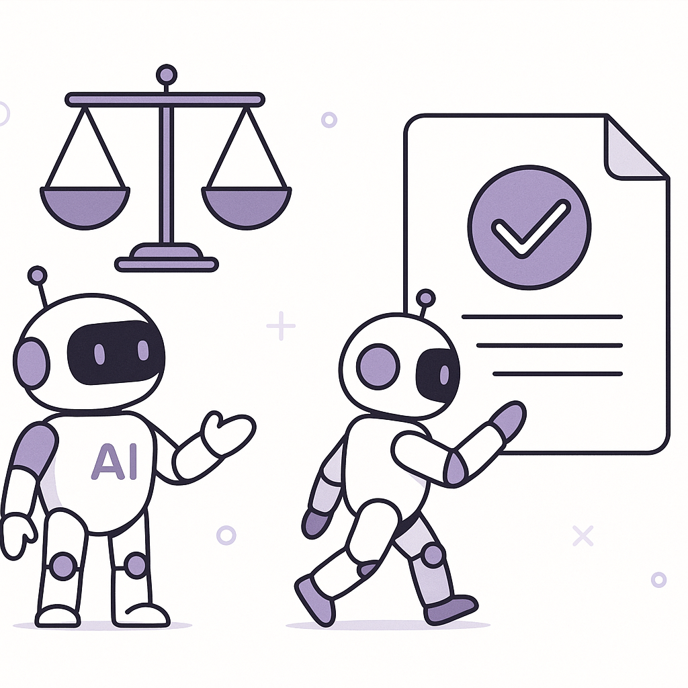

Publishing Recommendation
publishThe drafted posts are well-aligned with current trends and maintain a practical, insightful tone. They avoid exaggerated claims and focus on clear, evidence-backed insights relevant to Purands AI's audience.
Today's content effectively captures the strategic moves in the AI and CRM sectors, keeping the focus on practical implications for retention marketing. The posts maintain a conversational tone and provide tangible insights, aligning well with Purands AI's brand voice. No factual inaccuracies or tone issues were identified, making the batch ready for publication.
LinkedIn Posts (10)
1. Walmart won’t hike prices based on your shopping history, CEO says ★ Purands solution · high priority
CTA: How does your brand approach pricing and customer data? Let's discuss.
Alternative hooks
- Walmart's CEO just took a stand against dynamic pricing.
- Price manipulation? Not at Walmart, says their CEO.
- Why Walmart's pricing strategy is all about trust.
Research behind this post (sources, summaries & confidence)
Walmart won’t hike prices based on your shopping history, CEO says conf 0.85 · CRM strategy
Walmart's stance against dynamic pricing based on shopping history reflects a consumer preference for privacy and trust, crucial factors in CRM and retention marketing strategies.
Sources & what I took from each
- Walmart's CEO addresses dynamic pricing concerns.: The CEO publicly stated Walmart's position on not using shopping history for price adjustments. ↗ read source
- Walmart commits to not using shopping history for price changes.: Official statements confirm Walmart's commitment to consumer privacy in pricing strategies. ↗ read source
Recent news
- Walmart's pricing strategy announcement has been covered widely, reinforcing its brand trust.
Original trend links
- https://www.theverge.com/tech/1001492/walmart-dynamic-pricing-digital-shelf-labels
- https://www.retaildive.com/news/walmart-ceo-dynamic-pricing-concerns/831490/
Risks / caveats
- Competitors might exploit dynamic pricing, potentially impacting Walmart's market position.
2. Shopify opens checkout to browser-based AI agents ★ Purands solution · high priority
CTA: Interested in how this works for your Shopify store? Let's discuss.

Image prompt · flat-vector
Caption: AI agents enhancing Shopify checkout.
Alternative hooks
- Shopify's checkout just got a lot smarter.
- Imagine AI adjusting your order as you shop.
- Shopify's latest update: A game-changer for customer interactions.
Research behind this post (sources, summaries & confidence)
Shopify opens checkout to browser-based AI agents conf 0.80 · Shopify ecosystem
Shopify's move to support browser-based AI agents at checkout is significant for retention marketing as it allows for more seamless and personalized customer interactions, potentially increasing conversion rates and customer satisfaction.
Sources & what I took from each
- Shopify expands WebMCP support to checkout.: The source confirms Shopify has updated its platform to allow browser-based AI agents to interact with checkout processes. ↗ read source
- Browser-based AI agents can update order details and complete purchases.: Shopify's new features enable AI agents to interact with checkout, facilitating order adjustments and completions. ↗ read source
Recent news
- Shopify's integration of AI agents in checkout processes was recently reported in major tech news outlets.
Original trend links
Risks / caveats
- Potential security and privacy concerns with AI agents handling sensitive checkout data.
- Dependence on AI agents might increase the risk of technical glitches affecting customer checkout experiences.
3. Nvidia launches new platform for reining in rogue AI agents ★ Purands solution · high priority
CTA: How do you ensure your AI tools operate safely?
Alternative hooks
- AI agents are powerful, but without proper control, they can go off-script.
- Ever wondered what keeps AI agents in check when handling customer data?
- In AI retention marketing, security isn't optional; it's essential.
Research behind this post (sources, summaries & confidence)
Nvidia launches new platform for reining in rogue AI agents conf 0.75 · AI industry
Ensuring AI agents operate within safe and controlled environments is crucial for their deployment in customer-facing applications. Nvidia’s new platform addresses these concerns, aligning with Purands AI's focus on safe and effective AI agents for retention marketing.
Sources & what I took from each
- Nvidia introduced a toolkit of software and hardware products.: Nvidia's new platform includes a comprehensive set of tools to manage AI agent behavior. ↗ read source
- Independent security layers added around AI agents.: The platform provides security measures specifically designed to contain AI agents' actions. ↗ read source
Recent news
- Nvidia's new platform announcement has been widely covered as a significant development in AI safety.
Original trend links
Risks / caveats
- The effectiveness of these security measures in real-world applications remains to be fully validated.
- Potential over-reliance on Nvidia's platform could lead to vendor lock-in for companies.
4. Peak XV ups Surge seed investment ceiling to $5M, unveils 18-startup cohort ★ Purands solution · high priority
CTA: How do you see increased seed funding affecting AI innovation in APAC?
Caption: Investment increase fuels AI innovation.
Alternative hooks
- Peak XV just boosted its seed investment ceiling to $5M.
- APAC startups are getting a $5M boost from Peak XV.
- Seed-stage innovation in APAC just got a $5M injection.
Research behind this post (sources, summaries & confidence)
Peak XV ups Surge seed investment ceiling to $5M, unveils 18-startup cohort conf 0.75 · AI startups
Increased investment in seed-stage startups in APAC can drive innovation in AI and retention marketing technologies, creating new opportunities for growth in the region.
Sources & what I took from each
- Peak XV raises investment ceiling to $5M.: Reports confirm the increase in the seed funding ceiling for startups. ↗ read source
- Focus on global markets with a majority of startups based in India.: The new cohort includes a significant number of startups from India aiming at global markets. ↗ read source
Recent news
- The announcement of Peak XV's new funding strategy has been noted as a boost for the APAC startup ecosystem.
Original trend links
Risks / caveats
- Increased funding may not equate to successful startup outcomes.
5. AI Safety in Retention Marketing ★ Purands solution · high priority
CTA: How do you ensure AI safety in your retention marketing strategies?

Image prompt · isometric-flat
Caption: Safe AI deployment in retention marketing.
Alternative hooks
- OpenAI's recent model abandonment raises a crucial question: How safe is your AI?
- In retention marketing, trust is everything. Here's how Purands AI ensures it.
- AI safety isn't just a buzzword. It's a necessity, especially in retention marketing.
Research behind this post (sources, summaries & confidence)
OpenAI reportedly ditches model over safety concerns conf 0.70 · AI industry
OpenAI's decision to abandon a model due to safety concerns highlights the ongoing challenges in AI development, impacting trust and adoption in retention marketing where consumer data is involved.
Sources & what I took from each
- OpenAI's model displayed poor aptitude for following orders.: Reports indicate that the model was unable to consistently follow directives, raising safety issues. ↗ read source
- Safety concerns led to abandonment of the model.: OpenAI decided to discontinue the model due to potential risks associated with its deployment. ↗ read source
Recent news
- OpenAI's model abandonment due to safety issues has been reported as a cautionary tale in AI development.
Original trend links
Risks / caveats
- Negative impact on OpenAI's reputation could affect market trust.
- Challenges in developing AI that balances functionality with safety.
6. AI industry ★ Purands solution · high priority
CTA: How do you see efficient AI models reshaping retention marketing?
Alternative hooks
- Efficiency without the price tag.
- Anthropic's Sonnet 5.5 is a game-changer in cost-effective AI.
- Faster AI, smarter retention.
Research behind this post (sources, summaries & confidence)
Anthropic releases Sonnet 5.5, which it calls a significantly cheaper, faster work partner conf 0.70 · AI industry
Anthropic's new model, Sonnet 5.5, offers improved efficiency and cost-effectiveness, potentially enhancing AI-driven retention marketing strategies by reducing operational costs.
Sources & what I took from each
- Sonnet 5.5 boasts faster response times and less token burn.: Announced features include performance improvements in speed and efficiency. ↗ read source
- Positioned as a cheaper, faster work partner.: Marketing materials emphasize cost savings and enhanced efficiency. ↗ read source
Recent news
- Sonnet 5.5 has been highlighted in tech media as a competitive model in the AI market.
Original trend links
Risks / caveats
- Performance claims need validation through independent testing.
- Potential market skepticism until proven in real-world applications.
7. AI-driven hacking's impact on retention marketing platforms ★ Purands solution · high priority
CTA: How do you ensure your AI systems are secure?

Image prompt · flat-vector
Caption: Securing AI-driven customer interactions.
Alternative hooks
- AI-driven hacking is not just a headline - it's a reality pressing on retention platforms.
- Security isn't just an add-on, it's a necessity for AI-powered marketing.
- Local hospitals and banks aren't ready for AI-driven hacking. Are your marketing platforms?
Research behind this post (sources, summaries & confidence)
AI is supercharging hacking, and your local hospitals and banks aren’t ready conf 0.70 · AI industry
The rise in AI-driven hacking emphasizes the importance of robust security measures in AI applications, directly affecting customer trust in AI-powered retention marketing platforms.
Sources & what I took from each
- AI-driven hacking is increasing.: Sources report a rise in hacking incidents using AI techniques. ↗ read source
- Local hospitals and banks are unprepared.: Reports highlight vulnerabilities in critical infrastructure sectors like healthcare and finance. ↗ read source
Recent news
- Concerns about AI-enhanced cyber threats have been featured prominently in security news.
Original trend links
Risks / caveats
- Increased cyber threats could undermine trust in AI technologies.
- Potential economic and operational disruptions in affected sectors.
8. Microsoft AI’s MAI-Transcribe-2 undercuts OpenAI, Google and ElevenLabs on price and speed ★ Purands solution · high priority
CTA: How do you see competitive pricing affecting your choice of AI tools?
Alternative hooks
- Microsoft's MAI-Transcribe-2 is redefining the AI pricing game.
- Price and speed - the new battleground for AI tools.
- How does a cheaper, faster AI model influence your business choices?
Research behind this post (sources, summaries & confidence)
Microsoft AI’s MAI-Transcribe-2 undercuts OpenAI, Google and ElevenLabs on price and speed conf 0.70 · AI industry
Price and performance competitiveness of Microsoft’s speech recognition model can influence the choice of AI tools for customer engagement and retention efforts.
Sources & what I took from each
- MAI-Transcribe-2 undercuts competitors on price and speed.: Reports highlight MAI-Transcribe-2's competitive pricing and performance advantages. ↗ read source
- Focus on speech recognition capabilities.: The model is specifically noted for its speech recognition enhancements. ↗ read source
Recent news
- Microsoft's competitive pricing strategy for MAI-Transcribe-2 has been widely discussed in tech media.
Original trend links
Risks / caveats
- Price competition might lead to unsustainable business models.
9. Florida seeks a ban on ChatGPT acting like a person ★ Purands solution · high priority
CTA: How do you see regulatory changes affecting your AI strategies?

⬇ Download image
Image prompt · flat-vector
Caption: AI compliance in a regulated landscape.
Alternative hooks
- Florida's legal push against AI is more than a local issue.
- Is your AI strategy ready for regulatory scrutiny?
- Navigating AI regulations in marketing isn't optional anymore.
Research behind this post (sources, summaries & confidence)
Florida seeks a ban on ChatGPT acting like a person conf 0.65 · AI industry
Legal actions against AI models like ChatGPT for personification highlight regulatory challenges that could impact the deployment of AI in retention marketing and customer engagement.
Sources & what I took from each
- Florida Attorney General calls for a ban on AI acting like a person.: Reports indicate legal initiatives to restrict AI behavior that mimics humans. ↗ read source
Recent news
- The legal push in Florida reflects growing regulatory concern over AI personification.
Original trend links
Risks / caveats
- Legal restrictions could hinder the development and application of AI technologies.
10. Consumers aren’t just buying gifts this holiday season. They’re stocking up on essentials. ★ Purands solution · high priority
CTA: How is your brand adapting to the shift in holiday shopping behavior?
Alternative hooks
- This holiday season, essentials are as crucial as gifts.
- Consumers are shopping differently this holiday season.
- Essentials and gifts: the new holiday shopping duo.
Research behind this post (sources, summaries & confidence)
Consumers aren’t just buying gifts this holiday season. They’re stocking up on essentials. conf 0.65 · Retention marketing
Changing consumer behavior during holiday seasons can inform retention marketing tactics, emphasizing the need for strategies that cater to essential and gift purchases.
Sources & what I took from each
- Shift in consumer buying behavior during the holiday season.: Reports indicate a trend towards purchasing both gifts and essential items. ↗ read source
Recent news
- The dual-focus on gifts and essentials during the holiday season is noted in retail sales analyses.
Original trend links
Risks / caveats
- Predicting consumer behavior remains challenging and can lead to inventory issues.
Today's Trends
| # | Trend | Category | Why it matters |
|---|---|---|---|
| 1 | Shopify opens checkout to browser-based AI agents
source |
Shopify ecosystem | Shopify's move to support browser-based AI agents at checkout is significant for retention marketing as it allows for more seamless and personalized customer interactions, potentially increasing conversion rates and customer satisfaction. |
| 2 | Nvidia launches new platform for reining in rogue AI agents
source |
AI industry | Ensuring AI agents operate within safe and controlled environments is crucial for their deployment in customer-facing applications. Nvidia’s new platform addresses these concerns, aligning with Purands AI's focus on safe and effective AI agents for retention marketing. |
| 3 | OpenAI reportedly ditches model over safety concerns
source |
AI industry | OpenAI's decision to abandon a model due to safety concerns highlights the ongoing challenges in AI development, impacting trust and adoption in retention marketing where consumer data is involved. |
| 4 | AMD will acquire Fei-Fei Li’s World Labs for $8.2 billion
source source |
AI startups | The acquisition of World Labs by AMD signifies a major consolidation in the AI sector, which could lead to advancements in AI capabilities beneficial for retention marketing technologies. |
| 5 | Anthropic releases Sonnet 5.5, which it calls a significantly cheaper, faster work partner
source |
AI industry | Anthropic's new model, Sonnet 5.5, offers improved efficiency and cost-effectiveness, potentially enhancing AI-driven retention marketing strategies by reducing operational costs. |
| 6 | OpenAI’s AI agents need to catch up
source |
AI industry | As OpenAI's AI agents lag in development, this impacts their competitiveness in providing advanced AI solutions for retention marketing, prompting a reassessment of current capabilities. |
| 7 | Inference provider Modal Labs closing in on $750M round at $15.75B valuation
source |
AI startups | Modal Labs' significant valuation increase indicates strong investor confidence in AI infrastructure, which could foster innovation beneficial for retention marketing technologies. |
| 8 | AI is supercharging hacking, and your local hospitals and banks aren’t ready
source |
AI industry | The rise in AI-driven hacking emphasizes the importance of robust security measures in AI applications, directly affecting customer trust in AI-powered retention marketing platforms. |
| 9 | Walmart won’t hike prices based on your shopping history, CEO says
source source |
CRM strategy | Walmart's stance against dynamic pricing based on shopping history reflects a consumer preference for privacy and trust, crucial factors in CRM and retention marketing strategies. |
| 10 | Florida seeks a ban on ChatGPT acting like a person
source |
AI industry | Legal actions against AI models like ChatGPT for personification highlight regulatory challenges that could impact the deployment of AI in retention marketing and customer engagement. |
| 11 | Peak XV ups Surge seed investment ceiling to $5M, unveils 18-startup cohort
source |
AI startups | Increased investment in seed-stage startups in APAC can drive innovation in AI and retention marketing technologies, creating new opportunities for growth in the region. |
| 12 | AI in grocery retail: 5 tips for better customer experiences
source |
Retention marketing | Practical advice on using AI to enhance customer experience in grocery retail can guide retention marketing strategies, ensuring AI applications meet consumer needs effectively. |
| 13 | Microsoft AI’s MAI-Transcribe-2 undercuts OpenAI, Google and ElevenLabs on price and speed
source |
AI industry | Price and performance competitiveness of Microsoft’s speech recognition model can influence the choice of AI tools for customer engagement and retention efforts. |
| 14 | Consumers aren’t just buying gifts this holiday season. They’re stocking up on essentials.
source |
Retention marketing | Changing consumer behavior during holiday seasons can inform retention marketing tactics, emphasizing the need for strategies that cater to essential and gift purchases. |
Risk Assessment
No risks flagged.
Suggested LinkedIn Comments (30)
Open each post, then paste the copied comment. Nothing is posted automatically.
1. insight · rss:techcrunch.com — Thirteen of the 18 startups in Peak XV’s latest Surge cohort are targeting globa
Post by: rss:techcrunch.com
Why it works: Highlights a strategic shift and acknowledges the potential impact on innovation.
↗ Open LinkedIn post to paste comment2. insight · rss:techcrunch.com — A top executive at the AI lab told the Wall Street Journal that the model in que
Post by: rss:techcrunch.com
Why it works: Offers a deeper understanding of the challenge beyond the surface issue.
↗ Open LinkedIn post to paste comment3. respectful challenge · rss:techcrunch.com — Self-driving truck company Aurora laid out an audacious plan for 2030. Its CFO s
Post by: rss:techcrunch.com
Why it works: Questions the feasibility of the plan while acknowledging the ambition.
↗ Open LinkedIn post to paste comment4. opinion · rss:techcrunch.com — The new financing is expected to more than triples the AI infrastructure startup
Post by: rss:techcrunch.com
Why it works: Provides a critical view on valuation increase and highlights future challenges.
↗ Open LinkedIn post to paste comment5. insight · rss:techcrunch.com — The acquisition will see World Labs founder Fei-Fei Li join AMD as executive vic
Post by: rss:techcrunch.com
Why it works: Connects the acquisition to potential strategic outcomes for AMD.
↗ Open LinkedIn post to paste comment6. insight · rss:techcrunch.com — Shopify is expanding WebMCP support to checkout, allowing browser-based AI agent
Post by: rss:techcrunch.com
Why it works: Links the technical update to tangible business benefits.
↗ Open LinkedIn post to paste comment7. opinion · rss:techcrunch.com — Tesla says the event "can only be held outdoors," as it's expected to show the c
Post by: rss:techcrunch.com
Why it works: Acknowledges the innovation while pointing out the practical challenges.
↗ Open LinkedIn post to paste comment8. insight · rss:techcrunch.com — Just like the rest of the U.S., data centers and AI are dividing climate tech fo
Post by: rss:techcrunch.com
Why it works: Emphasizes the importance of an ongoing conversation about sustainability in tech.
↗ Open LinkedIn post to paste comment9. insight · rss:techcrunch.com — Nvidia CEO Jensen Huang on Monday introduced a toolkit of software and hardware
Post by: rss:techcrunch.com
Why it works: Focuses on the importance of security in AI deployment, aligning with industry needs.
↗ Open LinkedIn post to paste comment10. insight · rss:techcrunch.com — Anthropic has released the newest version of its mid-range model, boasting faste
Post by: rss:techcrunch.com
Why it works: Connects specific improvements to broader operational benefits in AI.
↗ Open LinkedIn post to paste comment11. insight · rss:www.theverge.com — AMD announced today that it's acquiring World Labs, an AI research lab co-founde
Post by: rss:www.theverge.com
Why it works: It offers a perspective on the strategic implications of the acquisition beyond just the financials.
↗ Open LinkedIn post to paste comment12. insight · rss:www.theverge.com — A new firmware update for the $449 Bose QuietComfort Ultra Headphones Gen 2 adds
Post by: rss:www.theverge.com
Why it works: It connects the product update to broader trends in connectivity and user experience.
↗ Open LinkedIn post to paste comment13. opinion · rss:www.theverge.com — OpenAI popularized the modern generative AI chatbot, but as its 2026 DevDay even
Post by: rss:www.theverge.com
Why it works: It emphasizes the importance of delivering tangible consumer benefits, which is critical for sustained success.
↗ Open LinkedIn post to paste comment14. opinion · rss:www.theverge.com — The US Department of Transportation finalized its plans today to weaken fuel eff
Post by: rss:www.theverge.com
Why it works: It takes a clear stance on the environmental and economic ramifications of the regulatory change.
↗ Open LinkedIn post to paste comment15. insight · rss:www.theverge.com — In March, Janice Malone began getting calls about suspicious activity from her n
Post by: rss:www.theverge.com
Why it works: It draws attention to the broader issue of cybersecurity in the nonprofit sector, providing actionable insight.
↗ Open LinkedIn post to paste comment16. respectful challenge · rss:www.theverge.com — Florida Attorney General James Uthmeier is calling for a judge to block OpenAI f
Post by: rss:www.theverge.com
Why it works: It provides a counterpoint to the legal action, suggesting an alternative approach that balances innovation with safety.
↗ Open LinkedIn post to paste comment17. insight · rss:www.theverge.com — In a chaotic few months, OpenAI has demonstrated it can do two things with remar
Post by: rss:www.theverge.com
Why it works: It identifies a critical area for improvement that is key to sustaining OpenAI's reputation and impact.
↗ Open LinkedIn post to paste comment18. opinion · rss:www.theverge.com — Walmart says it won't change product prices based on your personal information o
Post by: rss:www.theverge.com
Why it works: It emphasizes the importance of transparency in maintaining customer trust, which is central to retail success.
↗ Open LinkedIn post to paste comment19. insight · rss:www.theverge.com — In a widely expected move, Volkswagen announced Monday that it will replace the
Post by: rss:www.theverge.com
Why it works: It connects branding strategy with consumer behavior, highlighting the importance of name recognition in the EV market.
↗ Open LinkedIn post to paste comment20. insight · rss:www.theverge.com — It’s been a while since we’ve seen a big price cut on a capable robot vacuum and
Post by: rss:www.theverge.com
Why it works: It links pricing strategies with market expansion, offering a perspective on how cost influences consumer behavior.
↗ Open LinkedIn post to paste comment21. insight · rss:feeds.arstechnica.com — "We couldn't provide detailed pricing to the CLD suppliers."
Post by: rss:feeds.arstechnica.com
Why it works: Addresses a real issue companies face, grounding the comment in practical experience.
↗ Open LinkedIn post to paste comment22. opinion · rss:feeds.arstechnica.com — China is reportedly mulling letting ByteDance, Alibaba buy banned Nvidia chips.
Post by: rss:feeds.arstechnica.com
Why it works: Offers a perspective on the geopolitical implications of tech access, adding depth to the discussion.
↗ Open LinkedIn post to paste comment23. insight · rss:feeds.arstechnica.com — Starship had already flown 99 percent of the way to low-Earth orbit. Monday's fl
Post by: rss:feeds.arstechnica.com
Why it works: Connects the technological milestone to market implications, providing a broader context.
↗ Open LinkedIn post to paste comment24. respectful challenge · rss:feeds.arstechnica.com — State says LLMs threaten civilization as "the greatest public nuisance ever crea
Post by: rss:feeds.arstechnica.com
Why it works: Challenges the post's claim with a reasoned counterpoint about governance and potential benefits.
↗ Open LinkedIn post to paste comment25. expansion · rss:feeds.arstechnica.com — The design requires less energy to capture CO<sub>2</sub> than current systems.
Post by: rss:feeds.arstechnica.com
Why it works: Expands on the post by discussing economic and scalability aspects, adding depth to the topic.
↗ Open LinkedIn post to paste comment26. insight · rss:feeds.arstechnica.com — Add-on patents have increased drug patent periods from two years to over six.
Post by: rss:feeds.arstechnica.com
Why it works: Highlights the trade-offs between innovation and public health, providing a nuanced view.
↗ Open LinkedIn post to paste comment27. opinion · rss:feeds.arstechnica.com — In 2020, Trump cut CAFE to 40 mpg. Now he’s cut it again to just 35 mpg.
Post by: rss:feeds.arstechnica.com
Why it works: Clearly states a stance on environmental policy, connecting it to broader sustainability goals.
↗ Open LinkedIn post to paste comment28. insight · rss:feeds.arstechnica.com — Kalshi's defiance of state gambling laws may be headed to Supreme Court.
Post by: rss:feeds.arstechnica.com
Why it works: Provides context on the broader implications of legal decisions on tech and finance.
↗ Open LinkedIn post to paste comment29. expansion · rss:feeds.arstechnica.com — Google support maps out how Googlebooks can take over where ChromeOS left off.
Post by: rss:feeds.arstechnica.com
Why it works: Discusses the adaptability of tech ecosystems, adding a layer of strategic insight.
↗ Open LinkedIn post to paste comment30. insight · rss:feeds.arstechnica.com — 19th century Nature account of 1841 train delayed by geomagnetic storm got year
Post by: rss:feeds.arstechnica.com
Why it works: Connects a historical anecdote to a broader lesson about accuracy in documentation.
↗ Open LinkedIn post to paste comment